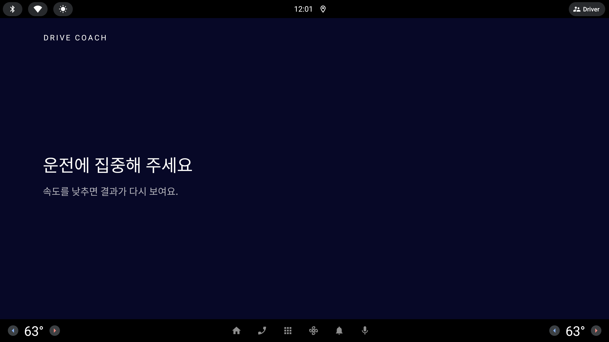

Done · 리포트 · 퀴즈 같은 정차 화면은 시뮬레이션 차가 5 km/h 를 넘으면 Ink 평면 잠금 "운전에 집중해 주세요" 로 바뀌고 관리자 띠까지 숨는다. 그래서 시연 중 발표자가 정차 를 누를 길이 없다. 잠금 화면을 지키면서 발표자만 빠져나오는 방법 세 가지.
#버그?
- 운전에 집중해 주세요 속도를 낮추면 결과가 다시 보여요' 라는 멘트가 나오는데 관리자모드를 중간에 어떻게 켤지 모르겠어 팝업 상하단 회색 알약등이 없어서 어떻게 속도를 줄이지 방법을 못 찾음— 사용자 피드백 원문, 10/6 저녁 (녹화 기준 태그 inhouse-20261006-5 APK 를 직접 눌러 보고)
모든 목업은 1/3 축척 · 실제 화면은 약 3배 (853×423 = 2560×1268 dp)점선 = 설명용 표시 (화면에는 그리지 않음)잠금 화면 문구는 세 시안 모두 그대로
운전자 화면 — 절대 규칙 10
주행 중(> 5 km/h)에는 터치 타깃 · 점수가 없다
운전자가 화면을 보지 않게 하는 규칙. 잠금 화면은 이 규칙을 화면으로 보여 주는 장면이다.
모든 빌드에 적용 — 사외 Fake, 사내 Hybrid, 순수 Real 차량 빌드.
세 시안 모두 운전자에게 보이는 부분(문구 · 평면 Ink · 타깃 0)은 바꾸지 않는다.
관리자 띠 — 운전자 UI 가 아니다
가짜 차를 움직이는 시뮬레이터 조작부
시연 빌드(Fake · Hybrid)에만 있다. 순수 Real 빌드에서는 관리자 객체가 null 이라 띠 · 준비실 · 워드마크 길게 누르기가 아예 없다.
실차라면 발표자 손의 별도 장치(또는 시뮬레이터 PC)에 있을 조작을, 에뮬 화면 한 장에 같이 그려 둔 것.
그래도 영상에서 잠금 화면에 단추가 보이면 심사자 눈에는 "주행 중 터치 타깃" 이다.
그래서 고르는 것은 발표자의 탈출구를 보이게 둘지(A), 숨길지(B), 애초에 막힐 일을 줄일지(C)다. 지금 화면 안에는 탈출구가 없다 — 차는 시나리오가 끝나도 마지막 속도를 유지하고(FakeVehiclePort.stop() 은 마지막 값 유지), 정차(stopCar = 0 km/h 고정)는 띠에만 있다.
지금
Done 에서 차가 다시 움직이면(시나리오가 아직 속도를 넣고 있거나 띠의 출발 을 누른 뒤) 화면 전체가 Ink 평면이 되고 맨 아래 관리자 띠도 사라진다. 운전자 기준으로는 맞는 동작이지만, 가짜 차를 멈출 사람(발표자)에게는 막다른 길이다.

Done 잠금 — "운전에 집중해 주세요 / 속도를 낮추면 결과가 다시 보여요." 터치 타깃 0, 띠 없음.비교: 정차 화면의 관리자 띠(맨 아래 Ink 줄) — 정차 는 여기에만 있다.
잠금 화면 — 맨 아래에 관리자 띠의 축소판(정차 · 시나리오 정지)만 남긴다
DRIVE COACH
운전에 집중해 주세요
속도를 낮추면 결과가 다시 보여요.
관리자 · 시연 조작 — 운전자 화면 아님시나리오 정지정차
잠금 (움직임)→띠의 정차→가짜 차 0 km/h 고정→잠금 풀림 · Done 그대로
A
얇은 관리자 띠
잠금일 때도 관리자 띠 자리를 남기되 칩 둘만(정차 · 시나리오 정지) 오른쪽에 둔다. 왼쪽에는 "관리자 · 시연 조작 — 운전자 화면 아님" 라벨, 위쪽 1px 선과 아주 옅은 면으로 운전자 영역과 갈라 놓는다. 평소 띠와 같은 자리 · 같은 칩 모양이라 발표자가 이미 아는 곳이다.
규칙 10
글자 그대로는 어긋난다 — 주행 중 화면에 터치 타깃 둘. "시뮬레이터 조작부라 운전자 화면이 아니다" 라는 설명이 필요하고, 영상에 그대로 찍힌다.
잘못 누름
낮음. 둘 다 해가 없다. 다만 시나리오 정지 는 재생만 멈추고 속도는 유지하므로 잠금이 안 풀린다 — 헷갈리면 정차 하나만 두는 편이 낫다.
발표자가 찾기
가장 쉽다. 설명 없이 바로 보인다.
난이도
하. UI 만(Codex) — 잠금일 때 띠를 숨기는 대신 축소판을 넘긴다. 모델 변경 없음(stopCar 이미 있음).
장점
가장 빠르고 확실한 탈출구. 녹화 중 사고(차가 안 멈춤)에서 바로 회복.
"관리자 띠는 운전자 UI 가 아니다" 를 화면이 스스로 말한다.
주의점
잠금 화면이 "주행 중 화면에는 아무것도 누를 게 없다" 를 보여 주는 장면인데, 그 장면에 단추가 보인다 — 발표 메시지와 충돌.
띠 칩 높이는 운전자용 76 dp 기준보다 작다(관리자용이라 허용해 왔지만 잠금에서는 더 눈에 띈다).
잠금 화면 — 보이는 것은 지금과 같다. 워드마크를 2초 누르면 정차 (누르는 동안만 아래 선이 찬다)
DRIVE COACH
숨은 영역 · 워드마크 · 길게 2초 (그리지 않음)
운전에 집중해 주세요
속도를 낮추면 결과가 다시 보여요.
잠금 (움직임)→워드마크 길게 2초→가짜 차 0 km/h 고정→잠금 풀림 · Done 그대로·홈에서 같은 손짓 = 준비실
B
워드마크 길게 누르기
잠금 화면은 그대로 두고, DRIVE COACH 워드마크를 2초 길게 누르면 정차. 준비실에 들어가는 손짓(홈에서 워드마크 2초, AdminHome 의 2,000 ms)과 같아 "막히면 워드마크를 길게" 하나만 외우면 된다. 누르는 동안만 워드마크 아래 Signal 선이 차올라 제대로 누르고 있다는 것을 알려 준다.
규칙 10
지킨다 — 보이는 터치 타깃 0. 숨은 핸들러는 시연 빌드에만 달리고 순수 Real 에는 없다(관리자 null). 2초 누르기라 운전자가 우연히 할 일도 없다.
잘못 누름
거의 없다. 다만 홈에서는 같은 손짓이 준비실이므로, 잠금에서 손을 늦게 떼고 화면이 풀린 뒤에도 누르고 있으면 준비실이 열리지 않게 "잠금에서 시작한 누름" 은 정차만 하도록.
발표자가 찾기
알려 주지 않으면 못 찾는다. 대본 · 런북 · 준비실 안내에 한 줄 적어야 한다.
난이도
하. UI 만(Codex) — 잠금 화면 워드마크에 길게 누르기 + 진행 선. 모델은 기존 stopCar.
장점
영상 속 잠금 화면이 완전히 깨끗하다 — 규칙 10 장면을 그대로 보여 줄 수 있다.
관리자 진입과 같은 손짓이라 규칙이 하나로 모인다.
주의점
숨은 기능은 아는 사람만 쓴다 — 이번 피드백처럼 처음 만진 사람은 여전히 막힌다.
사내 에뮬 터치(마우스)로 2초 누르기가 잘 되는지 사내에서 한 번 확인 필요.
잠금 화면 — 시나리오가 끝나면 가짜 차가 스스로 0 km/h. 시연 빌드에만 아래 안내 한 줄 + B 의 탈출구
DRIVE COACH
숨은 영역 · 길게 2초 = 바로 정차
운전에 집중해 주세요
속도를 낮추면 결과가 다시 보여요.
시연시나리오가 끝나면 차가 멈춰요. 바로 세우려면 DRIVE COACH 를 길게 누르세요.
시나리오 마지막 단계→가짜 차 0 km/h 고정 (자동)→Done · 리포트는 잠기지 않음·그래도 잠기면 (출발을 누른 뒤)→워드마크 길게
C
저절로 멈추는 차
원인을 없앤다. 시나리오의 마지막 단계가 지나면 가짜 차가 스스로 0 km/h 에 고정되어(stopCar 와 같은 상태) Done · 리포트가 시연 중에 잠길 일이 거의 없다. 일부러 출발 을 눌러 잠금을 보여 준 뒤에는 B 의 워드마크 길게 누르기로 세운다. 시연 빌드의 잠금 화면에만 맨 아래 옅은 안내 한 줄(터치 타깃 아님)로 이 두 가지를 적어 둔다.
규칙 10
지킨다 — 터치 타깃 0, 숫자 0. 안내 한 줄은 글자일 뿐이고 "시연" 표시를 달아 정직하게, 순수 Real 에는 없다.
잘못 누름
없다 — 대부분의 잠금이 애초에 생기지 않는다.
발표자가 찾기
안내 줄이 스스로 알려 준다. 처음 만진 사람도 읽고 빠져나온다.
난이도
중. 모델(Claude): 시나리오 재생 끝 → 0 km/h 고정(FakeVehiclePort / LessonViewModel, JVM 테스트). UI(Codex): 안내 줄 + B 의 길게 누르기. 시나리오별 끝 속도를 대본과 맞춰 재측정.
장점
막히는 상황 자체를 줄이고, 막혀도 화면이 탈출법을 알려 준다 — 이번 피드백의 두 문제(방법을 모름 · 속도를 못 줄임)를 둘 다 푼다.
영상의 잠금 장면은 B 처럼 깨끗하고, 안내 줄은 옅어서 주제를 해치지 않는다.
주의점
"Done 에서 다시 움직이면 잠긴다" 를 보여 주려면 이제 출발 을 일부러 눌러야 한다 — 대본에 한 단계.
안내 줄이 영상에 찍히는 것이 싫으면 녹화 빌드에서만 끌 수 있게(관리자 준비실 토글) — 그러면 B 와 같아진다.
세 시안 비교
잠금 화면에 보이는 것
규칙 10 (주행 중 터치 타깃)
잘못 누를 위험
처음 만진 발표자
영상 속 잠금 장면
난이도 · 누가
A
관리자 축소 띠(칩 둘)
어긋남 시뮬레이터 조작부라는 설명 필요
낮음 (시나리오 정지는 효과 없음)
바로 찾음
단추가 보임
하 UI(Codex)
B
지금과 같음
지킴 숨은 핸들러 · 시연 빌드만
거의 없음 (2초)
못 찾음 — 대본에 적어야
깨끗함
하 UI(Codex)
C
옅은 "시연" 안내 한 줄
지킴 글자만 · 시연 빌드만
없음 (대부분 잠기지 않음)
안내 줄을 읽고 빠져나옴
거의 깨끗함 (끌 수 있음)
중 모델(Claude) + UI(Codex)
추천
C — 시나리오가 끝나면 차가 멈추고, 막히면 워드마크를 길게
규칙 10 장면(잠금 화면)을 단추 없이 지키면서 막히는 원인(시나리오 뒤에도 남는 속도)을 모델에서 없애고, 남는 경우(일부러 출발)는 준비실과 같은 손짓으로 빠져나온다. 안내 한 줄 덕분에 이번 피드백처럼 처음 만진 사람도 길을 찾는다.
마감이 빠듯하면 순서대로: B 먼저(UI 만, 반나절 이하) → 모델의 자동 정차 → 안내 줄. A 는 영상 메시지와 부딪혀 권하지 않지만, 사내 녹화 중 비상용으로만 쓰려면 칩을 정차 하나로 줄인다.